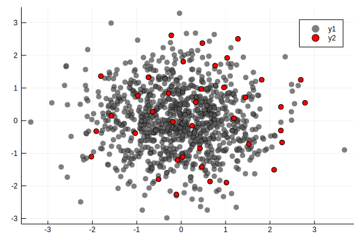

DPP.jl: a Julia package for sampling Determinantal Point Processes
DPP.jl provides some types and functions for sampling from DPPs (and related models).
Quick start
To define a DPP, first define an L-ensemble. The L-ensemble can either be defined as:
- full-rank, in which case it's represented as a $n \times n$ matrix $\mathbf{L}$
- low-rank, in which case it's represented as $\mathbf{L} = \mathbf{M}\mathbf{M}^t$ where $\mathbf{M}$ is $n \times m$, $m \leq n$. Low-rank ensembles are always faster to sample from.
- "projection", which is just like low-rank, expect you're restricted to sampling exactly $m$ points (i.e., the rank of the matrix)
An example for full-rank L-ensembles:
X = randn(2,1000) #1,000 points in dim 2
L = gaussker(X,.5) |> FullRankEnsemble
rescale!(L,40)
ind = sample(L) |> collect #sample returns a BitSet, we collect all indices
# On this plot the original points are in grey, the sampled ones in red
using Plots
Plots.scatter(X[1,:],X[2,:],color=:gray,alpha=.5)
Plots.scatter!(X[1,ind],X[2,ind],color=:red,alpha=1)
savefig("test.svg"); nothing For low-rank ensembles, we can use an RFF approximation:
Lr = rff(X,100,.5) |> LowRankEnsemble
rescale!(Lr,40)
ind = sample(Lr) |> collect
Plots.scatter(X[1,:],X[2,:],color=:gray,alpha=.5)
Plots.scatter!(X[1,ind],X[2,ind],color=:red,alpha=1)Example using polynomial features and a projection ensemble:
Lp = polyfeatures(X,10) |> LowRankEnsemble
ind = sample(Lr) |> collect
Plots.scatter(X[1,:],X[2,:],color=:gray,alpha=.5)
Plots.scatter!(X[1,ind],X[2,ind],color=:red,alpha=1)DPP.gaussker — Method.gaussker(X,σ)Compute the Gaussian kernel matrix for X and parameter σ, ie. a matrix with entry i,j equal to $\exp(-\frac{(x_i-x_j)^2}{2σ^2})$
See also: rff, kernelmatrix
DPP.polyfeatures — Method.polyfeatures(X,order)Compute monomial features up to a certain degree. For instance, if X is a 2 x n matrix and the degree argument equals 2, it will return a matrix with columns 1,X[1,:],X[2,:],X[1,:].^2,X[2,:].^2,X[1,:]*X[2,:] Note that the number of monomials of degree r in dimension d equals ${ d+r \choose r}$
X is assumed to be of dimension $d \times n$ where d is the dimension and n is the number of points.
Examples
X = randn(2,10) #10 points in dim 2
polyfeatures(X,2) #Output has three columnsDPP.rff — Method.rff(X,m,σ)Compute Random Fourier Features for the Gaussian kernel matrix with input points X and parameter σ. Returns a random matrix M such that, in expectation $\mathbf{MM}^t = \mathbf{K}$, the Gaussian kernel matrix. M has 2*m columns. The higher m, the better the approximation.
Examples
X = randn(2,10) #10 points in dim 2
rff(X,4,1.0)See also: gaussker, kernelmatrix
DPP.rff — Function.rff(X,m,σ)Compute Random Fourier Features for the Gaussian kernel matrix with input points X and parameter σ. Returns a random matrix M such that, in expectation $\mathbf{MM}^t = \mathbf{K}$, the Gaussian kernel matrix. M has 2*m columns. The higher m, the better the approximation.
Examples
X = randn(2,10) #10 points in dim 2
rff(X,4,1.0)See also: gaussker, kernelmatrix